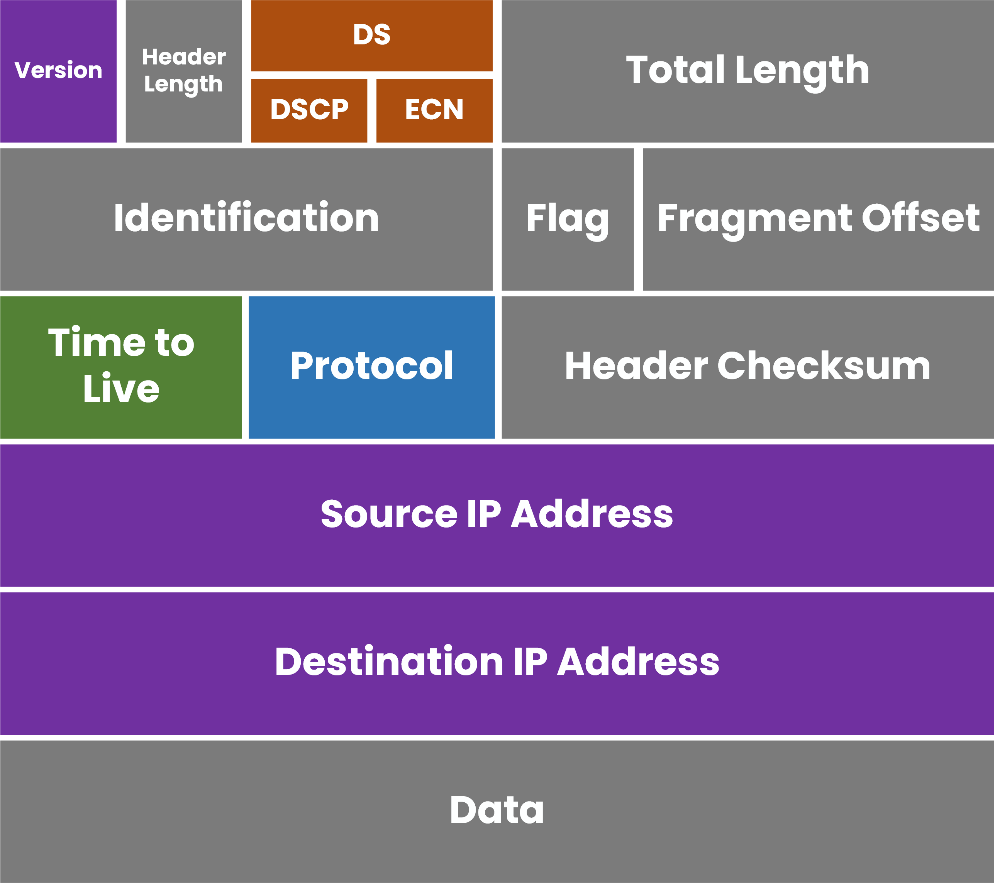
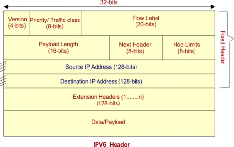

IP addresses
Devices use IP addresses to identify source and destination locations on a network. This helps packets move from one endpoint to another.
2.4 • Network and Routing
Devices need addresses, rules, and paths to communicate. This section explains how IP addresses identify devices, how routing moves packets across networks, and how common protocols support addressing, time, remote access, and secure communication.
When a computer communicates with another device, it breaks data into packets. The packet includes identifying information, such as source and destination addresses, so routers and network devices know where to send it and how to handle it.
Devices use IP addresses to identify source and destination locations on a network. This helps packets move from one endpoint to another.
Routers inspect packet information and forward traffic toward the destination while reducing the chance of packets looping forever.
DHCP, DNS, ICMP, RIP, NTP, SSH, SCP, and TLS each provide a different network service that supports communication and security.
IP stands for Internet Protocol. It is responsible for addressing and routing packets between networks. An IP address helps identify where data is coming from and where it is going. A router then uses that information to move traffic toward the correct destination.
IPv4 is the older and still common version of the Internet Protocol. It uses 32-bit addresses, written in decimal with four octets separated by periods.
Example: 192.168.1.25
Each octet can use a value from 0–255, giving IPv4 about 4.3 billion addresses in total. That sounds large, but the growth of networked devices created a need for IPv6.
IPv6 was introduced to solve IPv4 address exhaustion. It uses 128-bit addresses instead of 32-bit addresses and provides an enormous address space.
An IPv6 address looks like this: 2001:0db8:85a3:0000:0000:8a2e:0370:7334
It is written in hexadecimal and separated by colons. Leading zeros can be omitted, and a single run of zeros can be shortened with ::.
IPv4 packets contain a header with information needed for delivery and processing. Key fields include:
DHCP stands for Dynamic Host Configuration Protocol. It automatically gives a device an IP address, subnet mask, default gateway, and other network details when it joins a network.
DHCP uses UDP ports 67 and 68. It is useful because administrators do not have to manually configure every host.
Security note: A rogue DHCP server can provide malicious settings. DHCP snooping helps defend against that risk by allowing a switch to block responses from untrusted ports.
DNS stands for Domain Name System. It translates human-friendly domain names such as example.com into IP addresses such as 93.184.216.34.
DNS usually uses port 53. It is critical because users usually type domain names instead of memorizing numeric addresses.
Attackers may try to manipulate DNS information through spoofing or cache poisoning so users are sent to the wrong destination.
ICMP is for control and diagnostic messages. It is used by tools such as ping, and it uses IP protocol number 1 instead of a TCP or UDP port.
RIP is a routing protocol that uses UDP port 520 and measures routes by the number of hops, with a maximum usable count of 15.
NTP synchronizes device clocks using UDP port 123. Accurate time helps with logs, authentication, certificates, and troubleshooting.
SSH provides secure remote access using TCP port 22. It encrypts sessions between a user and a remote system.
SCP securely copies files between systems and usually uses the same SSH connection on TCP 22.
TLS protects data while it moves across a network by providing encryption, authentication, and integrity. Commonly used on HTTPS over TCP port 443, TLS is a security protocol rather than a single dedicated port number.

